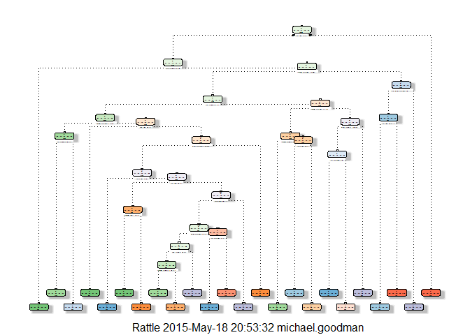

Practical Machine Learning Project
Michael Goodman
Tuesday, May 19, 2015
Executive Summary
GitHub Repo: https://github.com/MGoodman10/Practical-Machine-Learning
Background
Using devices such as Jawbone Up, Nike FuelBand, and Fitbit it is now possible to collect a large amount of data about personal activity relatively inexpensively. These type of devices are part of the quantified self movement - a group of enthusiasts who take measurements about themselves regularly to improve their health, to find patterns in their behavior, or because they are tech geeks. One thing that people regularly do is quantify how much of a particular activity they do, but they rarely quantify how well they do it. The goal of this project is to use data from accelerometers on the belt, forearm, arm, and dumbbell of 6 participants as they perform barbell lifts correctly and incorrectly 5 different ways.
Six young healthy participants were asked to perform one set of 10 repetitions of the Unilateral Dumbbell Biceps Curl in five different fashions:
- Class A - exactly according to the specification
- Class B - throwing the elbows to the front
- Class C - lifting the dumbbell only halfway
- Class D - lowering the dumbbell only halfway
- Class E - throwing the hips to the front
Class A corresponds to the specified execution of the exercise, while the other 4 classes correspond to common mistakes. Participants were supervised by an experienced weight lifter to make sure the execution complied to the manner they were supposed to simulate. The exercises were performed by six male participants aged between 20-28 years, with little weight lifting experience. Researchers made sure that all participants could easily simulate the mistakes in a safe and controlled manner by using a relatively light dumbbell (1.25kg).
Reference
Velloso, E.; Bulling, A.; Gellersen, H.; Ugulino, W.; Fuks, H. Qualitative Activity Recognition of Weight Lifting Exercises. Proceedings of 4th International Conference in Cooperation with SIGCHI (Augmented Human '13). Stuttgart, Germany: ACM SIGCHI, 2013.
Data
The training data for this project are available at:
https://d396qusza40orc.cloudfront.net/predmachlearn/pml-training.csv
The test data are available at:
https://d396qusza40orc.cloudfront.net/predmachlearn/pml-testing.csv
Goal
The goal of this project is to predict the manner in which subjects did the exercise. This is the "classe" variable in the training set. The model will use the other variables to predict with. This report describes:
- how the model is built
- use of cross validation
- an estimate of expected out of sample error
Getting and cleaning the Data
The first step is to download the data, load it into R and prepare it for the modeling process.
Load the functions and static variables
All functions are loaded and static variables are assigned. Also in this section, the seed is set so the pseudo-random number generator operates in a consistent way for repeat-ability.
library(caret)
library(rpart)
library(rpart.plot)
library(RColorBrewer)
library(rattle)
library(e1071)
library(randomForest)
set.seed(1)
train.url <-
"https://d396qusza40orc.cloudfront.net/predmachlearn/pml-training.csv"
test.url <-
"https://d396qusza40orc.cloudfront.net/predmachlearn/pml-testing.csv"
path <- paste(getwd(),"/", "machine", sep="")
train.file <- file.path(path, "machine-train-data.csv")
test.file <- file.path(path, "machine-test-data.csv")Dowload the files (if necessary) and read them into memory
The files are read into memory. Various indicators of missing data (i.e., "NA", "#DIV/0!" and "") are all set to NA so they can be processed.
if (!file.exists(train.file)) {
download.file(train.url, destfile=train.file)
}
if (!file.exists(test.file)) {
download.file(test.url, destfile=test.file)
}
train.data.raw <- read.csv(train.file, na.strings=c("NA","#DIV/0!",""))
test.data.raw <- read.csv(test.file, na.strings=c("NA","#DIV/0!",""))Remove unecessary colums
Columns that are not deeded for the model and columns that contain NAs are eliminated.
# Drop the first 7 columns as they're unnecessary for predicting.
train.data.clean1 <- train.data.raw[,8:length(colnames(train.data.raw))]
test.data.clean1 <- test.data.raw[,8:length(colnames(test.data.raw))]
# Drop colums with NAs
train.data.clean1 <- train.data.clean1[, colSums(is.na(train.data.clean1)) == 0]
test.data.clean1 <- test.data.clean1[, colSums(is.na(test.data.clean1)) == 0]
# Check for near zero variance predictors and drop them if necessary
nzv <- nearZeroVar(train.data.clean1,saveMetrics=TRUE)
zero.var.ind <- sum(nzv$nzv)
if ((zero.var.ind>0)) {
train.data.clean1 <- train.data.clean1[,nzv$nzv==FALSE]
}Slice the data for cross validation
The training data is divided into two sets. This first is a training set with 70% of the data which is used to train the model. The second is a validation set used to assess model performance.
in.training <- createDataPartition(train.data.clean1$classe, p=0.70, list=F)
train.data.final <- train.data.clean1[in.training, ]
validate.data.final <- train.data.clean1[-in.training, ]Model Development
Train the model
The training data-set is used to fit a Random Forest model because it automatically selects important variables and is robust to correlated covariates & outliers in general. 5-fold cross validation is used when applying the algorithm. A Random Forest algorithm is a way of averaging multiple deep decision trees, trained on different parts of the same data-set, with the goal of reducing the variance. This typically produces better performance at the expense of bias and interpret-ability. The Cross-validation technique assesses how the results of a statistical analysis will generalize to an independent data set. In 5-fold cross-validation, the original sample is randomly partitioned into 5 equal sized sub-samples. a single sample is retained for validation and the other sub-samples are used as training data. The process is repeated 5 times and the results from the folds are averaged.
control.parms <- trainControl(method="cv", 5)
rf.model <- train(classe ~ ., data=train.data.final, method="rf",
trControl=control.parms, ntree=251)
rf.model## Random Forest
##
## 13737 samples
## 52 predictor
## 5 classes: 'A', 'B', 'C', 'D', 'E'
##
## No pre-processing
## Resampling: Cross-Validated (5 fold)
##
## Summary of sample sizes: 10990, 10990, 10989, 10990, 10989
##
## Resampling results across tuning parameters:
##
## mtry Accuracy Kappa Accuracy SD Kappa SD
## 2 0.9905366 0.9880275 0.001543981 0.001955033
## 27 0.9906094 0.9881210 0.001295651 0.001638512
## 52 0.9828201 0.9782677 0.004693225 0.005936194
##
## Accuracy was used to select the optimal model using the largest value.
## The final value used for the model was mtry = 27.
Estimate performance
The model fit using the training data is tested against the validation data. Predicted values for the validation data are then compared to the actual values. This allows forecasting the accuracy and overall out-of-sample error, which indicate how well the model will perform with other data.
rf.predict <- predict(rf.model, validate.data.final)
confusionMatrix(validate.data.final$classe, rf.predict)## Confusion Matrix and Statistics
##
## Reference
## Prediction A B C D E
## A 1670 1 2 0 1
## B 5 1130 3 1 0
## C 0 7 1016 3 0
## D 0 0 4 957 3
## E 0 1 2 2 1077
##
## Overall Statistics
##
## Accuracy : 0.9941
## 95% CI : (0.9917, 0.9959)
## No Information Rate : 0.2846
## P-Value [Acc > NIR] : < 2.2e-16
##
## Kappa : 0.9925
## Mcnemar's Test P-Value : NA
##
## Statistics by Class:
##
## Class: A Class: B Class: C Class: D Class: E
## Sensitivity 0.9970 0.9921 0.9893 0.9938 0.9963
## Specificity 0.9990 0.9981 0.9979 0.9986 0.9990
## Pos Pred Value 0.9976 0.9921 0.9903 0.9927 0.9954
## Neg Pred Value 0.9988 0.9981 0.9977 0.9988 0.9992
## Prevalence 0.2846 0.1935 0.1745 0.1636 0.1837
## Detection Rate 0.2838 0.1920 0.1726 0.1626 0.1830
## Detection Prevalence 0.2845 0.1935 0.1743 0.1638 0.1839
## Balanced Accuracy 0.9980 0.9951 0.9936 0.9962 0.9976
accuracy <- postResample(rf.predict, validate.data.final$classe)
acc.out <- accuracy[1]
overall.ose <-
1 - as.numeric(confusionMatrix(validate.data.final$classe, rf.predict)
$overall[1])Results
The accuracy of this model is 0.9940527 and the Overall Out-of-Sample error is 0.0059473.
Run the model
The model is applied to the test data to produce the results.
results <- predict(rf.model,
test.data.clean1[, -length(names(test.data.clean1))])
results## [1] B A B A A E D B A A B C B A E E A B B B
## Levels: A B C D E
Appendix - Decision Tree Visualization
treeModel <- rpart(classe ~ ., data=train.data.final, method="class")
fancyRpartPlot(treeModel)